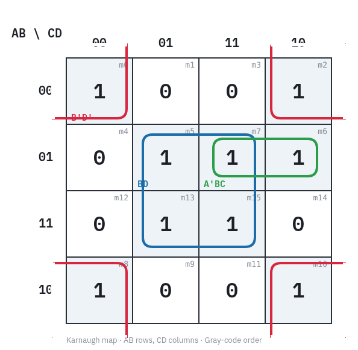
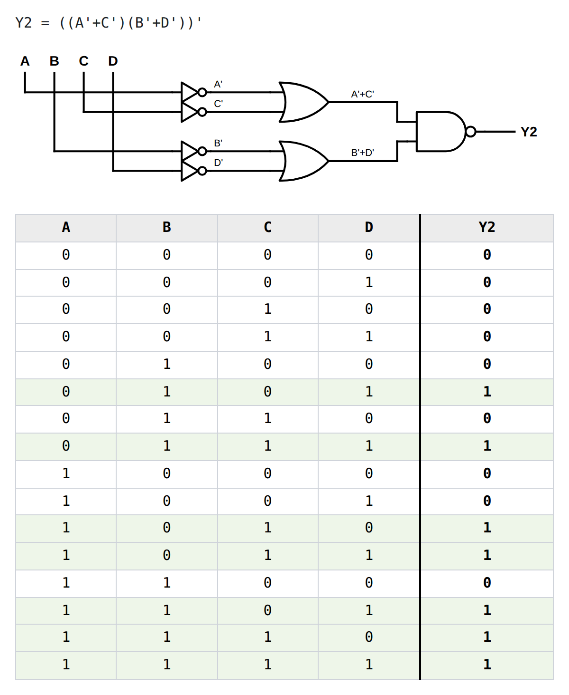

Superintendent Intern · Keles Group Inc.
Supported superintendent teams on construction projects totaling over $10.2M across Wylie and Grand Prairie.
Computer Science @ UT Dallas
Software Engineering · Backend Systems · Distributed Systems · Applied AI
I build backend and distributed systems focused on reliability, concurrency, messaging, search, and scalable infrastructure.
01 · About
I'm a Computer Science student at The University of Texas at Dallas, graduating Fall 2027 and pursuing Summer 2027 software engineering internships. My primary interests are backend engineering and distributed systems, with a secondary interest in applied AI and retrieval systems. I enjoy building practical software projects focused on reliability, scalability, and real-world engineering problems.
Alongside backend systems, I'm also exploring applied AI through search, retrieval, vector databases, and RAG-oriented projects.
02 · Work
Java · Spring Boot · Kafka · PostgreSQL · Docker · Testcontainers
Three-service event-driven commerce backend coordinating orders, inventory, and payments using Kafka and isolated databases, with reliability patterns for duplicate delivery, failures, and concurrent processing.
Systems · in development
Python · FastAPI · PostgreSQL/pgvector · Redis · Docker
Hybrid search engine: keyword and semantic retrieval over one PostgreSQL database, fused with Reciprocal Rank Fusion.
Next model-backed embeddings, then a RAG layer
Java · Spring Boot · PostgreSQL · Docker
Background-job platform where competing workers coordinate through PostgreSQL row locks alone: no broker, no coordination service.
Next cron schedules, dependencies, priorities
Java · Spring Boot · PostgreSQL · Docker
Objects split into chunks, replicated to two of three storage nodes, SHA-256-verified end to end, readable through a node failure.
Next repair and re-replication, consistent hashing
Tools · things you can use right now

HTML · Canvas · Vanilla JavaScript · one file, no dependencies
For digital-logic coursework. Fill a 2, 3, or 4-variable Karnaugh map, click the cells that belong to each group, and it draws the loops cleanly, wrap-around included, then exports a PNG for a typed submission. Draws — doesn't solve, because seeing the groupings is the whole exercise.

HTML · SVG · Vanilla JavaScript · one file, no dependencies
Type a Boolean equation with up to four inputs and it draws the gate diagram in standard ANSI symbols, generates the full truth table, and exports both as PNG or SVG for a lab report. Parses the usual notations, folds NOT-over-AND/OR/XOR into single NAND/NOR/XNOR gates, and routes the wires with proper junction dots.
03 · Writing
Type an equation with up to four inputs and get the ANSI gate diagram with routed wires and junction dots, the full truth table, and SVG or PNG export. One file, no dependencies.
SKIP LOCKED claims, a bounded lock hold, and a cross-replica ordering guard: what it took to make an outbox publisher safe to run twice.
Where you write the processed-events ledger decides whether a retry can lose the event forever.
Gray code makes the map a torus. Open edges make the wrap-around loops draw themselves.
04 · Experience
Supported superintendent teams on construction projects totaling over $10.2M across Wylie and Grand Prairie.
Supported customer-facing operations for a printing business in Richardson, TX.
05 · Skills
06 · Education
07 · Certifications
08 · Contact
Open to Summer 2027 software engineering internships — backend, distributed systems, and applied AI.